Cómo crear un repositorio
Un repositorio es como una carpeta para tu proyecto. El repositorio de tu proyecto contiene todos los archivos de tu repositorio y almacena el historial de revisión de cada archivo. También puedes debatir y administrar el trabajo de tu proyecto dentro del repositorio. Puedes ser propietario de repositorios individualmente o puedes compartir la propiedad de los repositorios con otras personas en una organización. (GitHub,Inc, 2021). Puedes crear un repositorio nuevo en tu cuenta personal o la cuenta de cualquier organización en la que tengas los permisos suficientes.
1. En la esquina superior derecha de cualquier página, utiliza el menú desplegable y selecciona Repositorio Nuevo.
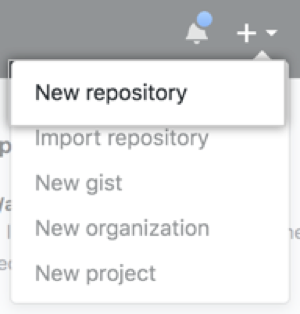Figure 7. Fuente Pag Web GitHub Docs
2. Otra opción para crear un repositorio con la estructura del directorio y los archivos de un repositorio existente es usar el menú desplegable Elegir una plantilla y seleccionar un repositorio de plantillas. Verás repositorios de plantillas que te pertenecen a ti y a las organizaciones de las que eres miembro o bien repositorios de plantillas que has usado anteriormente.
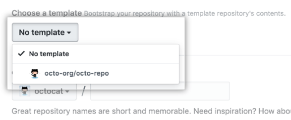Figure 8. Fuente Pag Web GitHub Docs
En el menú desplegable de Propietario, selecciona la cuenta en la cual quieres crear el repositorio.
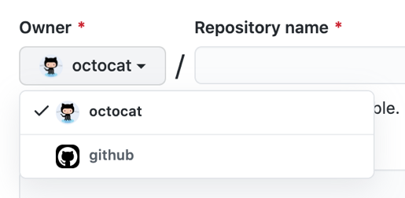Figure 9. Fuente Pag Web GitHub Docs
Teclea el nombre de tu repositorio, y una descripción opcional.
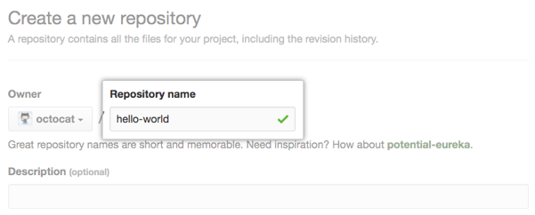Figure 10. Fuente Pag Web GitHub Docs
Elige la visibilidad del repositorio
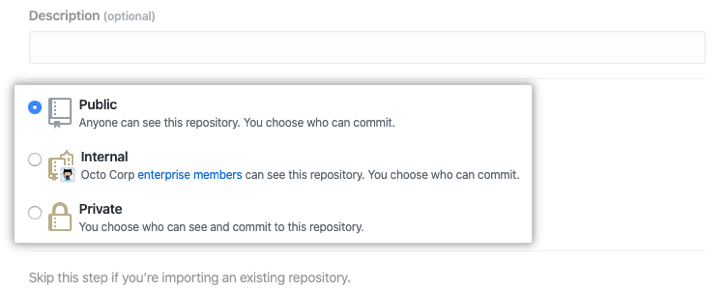Figure 11. Fuente Pag Web GitHub Docs
Si no estás usando una plantilla, una serie de elementos opcionales con los que puedes completar tu repositorio en forma previa. Si estás importando un repositorio existente a GitHub, no elijas ninguna de estas opciones, ya que producirás un conflicto de fusión. Puedes agregar o crear archivos nuevos usando la interfaz de usuario o elegir agregar archivos nuevos usando luego la línea de comando.
- Puedes crear un README, que es un documento que describe tu proyecto.
- Puedes crear un archivo .gitignore, que es un conjunto de reglas de ignorar. Puedes elegir agregar una licencia de software a tu proyecto.
Opcionalmente, si la cuenta personal o de organización que estás creando utiliza cualquier App GitHub de Mercado GitHub, selecciona cualquier app que quieras utilizar en el repositorio.
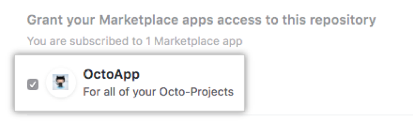Figure 12. Fuente Pag Web GitHub Docs
Da clic en Crear repositorio.
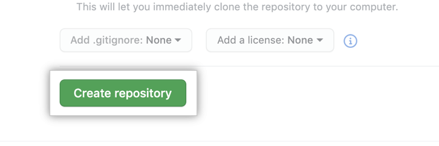Figure 13. Fuente Pag Web GitHub Docs
Cómo clonar un repositorio
Cuando crea un repositorio en GitHub, existe como un repositorio remoto. Puede clonar su repositorio para crear una copia local en su computadora y sincronizar entre las dos ubicaciones, para que sea más fácil solucionar conflictos de combinación, agregar o eliminar archivos y enviar confirmaciones más grandes.
Clonar un repositorio extrae una copia integral de todos los datos del mismo que GitHub tiene en ese momento, incluyendo todas las versiones para cada archivo y carpeta para el proyecto.
Puede clonar su repositorio existente o clonar el repositorio existente de otra persona para contribuir a un proyecto. Para clonar un repositorio de acuerdo a lo que indica el sitio oficial de GitHub (GitHub, Inc, 2021), se puede clonar el repositorio así:
- Utilizando línea de comando
- Clonar un repositorio a Github Desktop
Utilizando línea de comando
- En GitHub, visita la página principal del repositorio.
- Sobre la lista de archivos, da clic en Código. 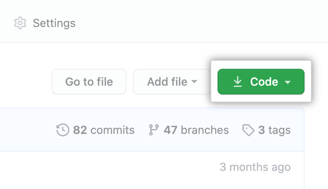
- Para clonar el repositorio usando HTTPS, en "Clonar con HTTPS", haga clic en la imagen del disquete. Para clonar el repositorio con una clave SSH, incluido un certificado emitido por la autoridad de certificación SSH de su organización, haga clic en Usar SSH y luego haga clic en en la imagen del disquete. Para clonar un repositorio usando CLI de GitHub, haga clic en Usar CLI de GitHub , luego haga clic en . 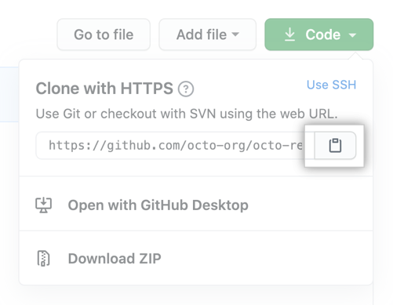
- Abre la Git Bash.
- Cambia el directorio de trabajo actual a la ubicación en donde quieres clonar el directorio.
- Escribe git clone, y luego pega la URL que copiaste antes.
- Presiona Enter para crear tu clon local.
Figure 14. Fuente Pag Web GitHub Docs
Figure 15. Fuente Pag Web GitHub Docs
Cómo hacer un commit (confirmaciones)
Puedes guardar grupos pequeños de cambios significativos como confirmaciones.
De forma similar al guardar un archivo que se editó, una confirmación registra los cambios en uno o más archivos en tu rama. Git asigna una ID única a cada comentario, a la cual se le llama SHA o hash, la cual identifica:
- Los cambios específicos
- Cuando se realizaron los cambios
- Quién creó los cambios
Cuando realizas una confirmación, debes incluir un mensaje de confirmación que describa brevemente los cambios.
Puedes agregar un co-autor en cualquier confirmación en la que colabores. También puedes crear una confirmación en nombre de una organización. El rebase te permite cambiar varias confirmaciones y puede modificar el orden de éstas en tu línea de tiempo.
Para confirmar los cambios en el repositorio voy a realizar un commit, en el campo Summary escribe un resumen o título del commit y en el campo Description escribe la descripción del commit y para continuar haz clic en el botón Commit to master. Nota: master es la rama que se crea por defecto en un repositorio Git. (RENE, 2017)
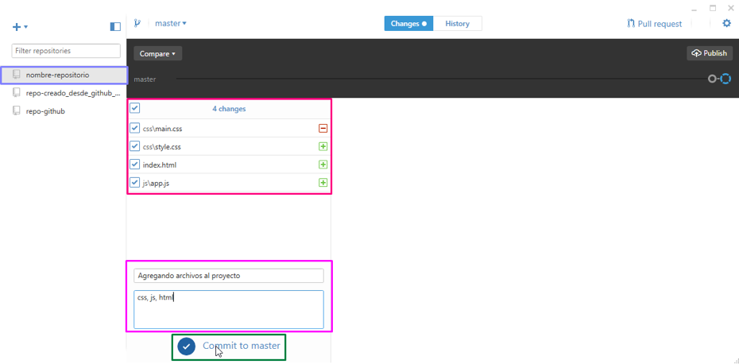Figure 16. Fuente Pag Web GitHub Docs
Cómo hacer push
Una vez realizado el commit si algo salio mal GitHub Desktop te da la posibilidad de revertir este commit haciendo clic en la opción Undo de la parte inferior, pero si todo esta correcto y como es la primera vez que agregamos estos archivos haz clic en el botón Publish. Nota: al hacer clic en el botón Publish se esta haciendo un push. (RENE, 2017)
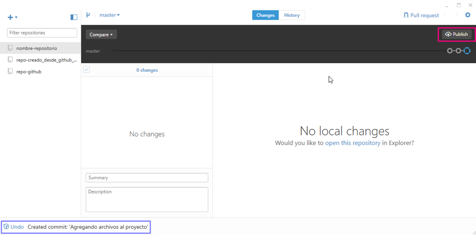Figure 17. Fuente Pag Web GitHub Docs
push: envía los cambios de tu repositorio local a tu repositorio remoto.
Referencias
- GitHub, Inc. (2021). GitHub docs. Obtenido de Clonar un repositorio desde GitHub: https://docs.github.com/es/github/creating-cloning-and-archiving-repositories/cloning-a-repository-from-github
- GitHub,Inc. (2021). GitHub Docs, Enterprise Server 3.0. Obtenido de Acerca de los repositorios: https://docs.github.com/es/github/creating-cloning-and-archiving-repositories/creating-a-repository-on-github
- KINSTA. (8https://kinsta.com/es/base-de-conocimiento/que-es-github/ de Agosto de 2020). ¿Qué es GitHub? Una Guía para Principiantes sobre GitHub.
- KINSTA. (29 de Diciembre de 2020). Git vs Github: ¿Cuál es la Diferencia y cómo Empezar? Obtenido de https://kinsta.com/es/base-de-conocimiento/git-vs-github/#una-introduccin-a-git-y-al-control-de-versiones
- Pagina web de GIT. (s.f.). GIT- control-de-versión-rápido. Obtenido de https://git-scm.com/
- RENE, L. (14 de Enero de 2017). LUIS MAS DEV. Obtenido de Instalación y Uso de GitHub Desktop: https://luismasdev.com/instalacion-y-uso-de-github-desktop/ Straub, S. C.-B. (2014). Pro Git (2da Edición ed.). Apress. Obtenido de https://git-scm.com/book/en/v2/Getting-Started-About-Version-Control